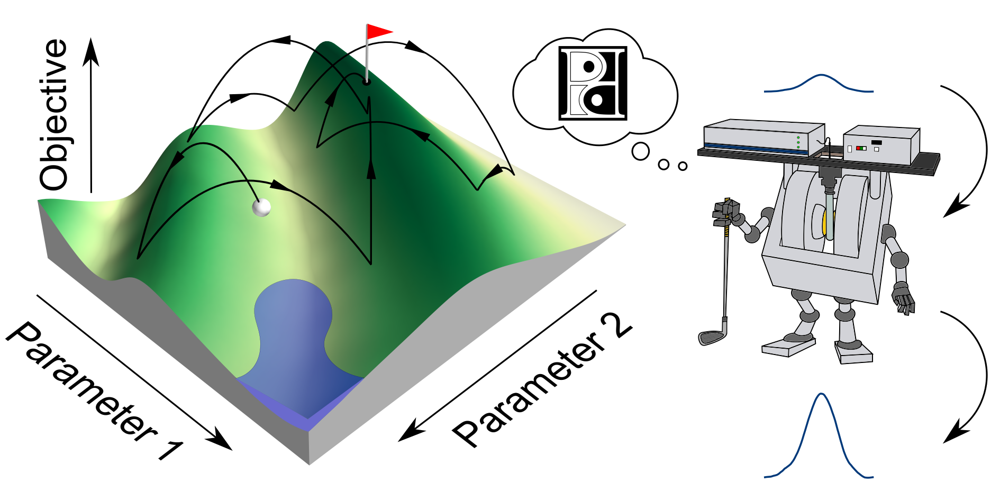

ESR-POISE User Guide¶
ESR-POISE (Electron Spin Resonance Parameter Optimisation by Iterative Spectral Evaluation) is a Python package for on-the-fly optimisation of ESR parameters in Bruker BioSpin Xepr software.
In here you will find guides on setting ESR-POISE up and using it to optimise ESR applications. Depending on your level of interaction with the software, you may not need to read all of it. For example, if somebody else has already installed and set up some esrpoise scripts for you, you can probably skip to Run an optimisation. You should also skip advanced subsections for your first steps with esrpoise.
For more insight, consult the source code. In particular, have a look at the examples scripts present in the package directory (esrpoise/examples/).
Note
The documentation you are currently reading is for version v1.0.1 of POISE.
To check your current version of POISE, type pip show esrpoise in terminal.